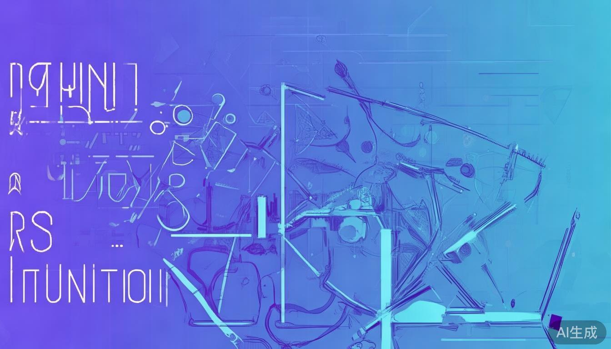

白驹 ccowork · 科学实验室
工科如何学
写给工科生的一套学习方法论。核心只有一句话： 数学给语言，物理给直觉，动手给能力，项目给方向，AI 给加速，报告给闭环。
一、数学是语言
工科生学数学，重点不是"会算"，而是"会读、会翻译"。
- 微分方程 = 描述"变化率如何互相影响"的语言；
- 线性代数 = 描述"变换、空间、维度"的语言；
- 概率统计 = 描述"不确定性与数据"的语言；
- 优化 = 描述"在约束下找最好"的语言。
怎么学才不白学：
- 每个数学概念都问一句"它在工程里对应什么"——梯度下降对应调参、傅里叶对应信号频谱、特征值对应结构固有频率。
- 学会"从公式读出物理含义"，而不是死记推导步骤。
- 优先掌握会用 + 会验证，推导能跟下来即可，不必每条都从头推。
工科数学的及格线：看到一个工程问题，能说出"这该用哪类数学工具、为什么"。
二、物理是直觉

数学给出精确的解，物理给出"答案该长什么样"的判断力。
- 没有物理直觉，你会算出一个
√(-1)的电阻、一个负的体积，却浑然不觉； - 有了物理直觉，你在动手之前就能估出数量级（费米估算），一眼看出仿真结果是不是错了。
训练物理直觉的方法：
- 量纲分析：任何物理量先看单位，单位对不上 = 公式必错；
- 极限与边界检查：把参数推到 0 或无穷，看结果是否退化到已知的简单情形；
- 数量级估算：解决问题前先估一个"大概是多少"，再和精确解对比。
直觉不是玄学，是大量实例 + 反复检验沉淀下来的肌肉记忆。
三、动手是王道
工科的真相：你看十遍不如敲一遍，你听懂了不一定是会了。
- 理论课上"听懂了"，一旦动手写代码 / 焊电路 / 搭实验，立刻原形毕露；
- 动手会逼你面对理论里被略过的细节——边界条件、数值误差、真实噪声。
动手的正确姿势：
- 从最小可运行版本开始（本 lab 的
numerical/脚本就是这个思路：每个方法一个能直接跑的文件）； - 边做边验证：每走一步都拿一个已知答案对照，而不是最后才发现全错；
- 故意改坏它：改参数、改初值，观察结果怎么变——这比读文档更理解本质；
- 养成"先自己实现一遍，再用现成库"的习惯。
四、项目驱动
孤立的知识点忘得快，项目能把零散知识点焊成一个体系。
- 学微积分 不如做一个"悬链线/最速降线仿真"；
- 学微分方程 不如做一个"SIR 传染病模型"或"RC 电路暂态仿真"；
- 学概率统计 不如做一个"从数据拟合传感器标定曲线"。
选项目的原则：
- 小步快跑：一个周末能出结果的，好过憋一个月没影的；
- 贴近真实：有真实数据、真实约束、真实结果可对照；
- 强制闭环：从需求 模型 实现 验证 总结，缺一不可。
本 lab 就是按这个逻辑组织的：
numerical/（数值方法）+modeling/（数学建模）+ 各实训项目，形成"方法 建模 工程落地"的闭环。
五、用 AI 结对（Pair with AI）
把 AI 当成结对编程的搭档 / 随时在线的助教，而不是"答案复印机"。
AI 用得好的场景：
- 解释概念："用工程直觉讲讲这个公式是什么意思"；
- 检查代码：贴上去让它找 bug、讲边界情况；
- 生成脚手架：快速搭出代码框架，再自己填核心逻辑；
- 出题自测：让它出几道小题，检验你到底会不会；
- 梳理报告：帮你整理思路、润色表达。
AI 用不好（会毁掉你）的场景：
- 直接抄答案，不自己动手 你获得了"完成了"的幻觉，却没获得能力；
- 不验证就提交 AI 也会一本正经地犯错（幻觉），你必须亲手运行、亲手检验；
- 用 AI 替代思考 永远问不出好问题，也识别不出坏答案。
结对铁律：
AI 写，你审；AI 答，你验；AI 教，你练。 责任和判断永远在你自己身上。
六、写实验报告闭环
实验报告不是"交作业的形式主义"，而是把经历沉淀成能力的最后一个环节。
闭环 = 做完 + 想清楚 + 写下来 + 可复用。
一份合格的工科报告至少包含：
- 目的：这次到底要验证/实现什么；
- 原理与方法：用了什么模型、什么方法，为什么选它；
- 过程与数据：记录真实的步骤、参数、原始数据（含失败的记录）；
- 结果与分析：结果是什么、误差多大、和预期差多少、为什么；
- 结论与反思：得到了什么结论，哪里没做好，下次怎么改进。
报告的三重价值：
- 对自己：写不出来的地方，就是没真懂的地方——报告是知识的照妖镜；
- 对团队：可复用的文档，别人能接着你的工作往下做；
- 对评委/雇主：报告是你能"把一件事讲清楚"的直接证据。
七、一句话总结
| 原则 | 一句话 |
|---|---|
| 数学是语言 | 学会翻译，不只会算 |
| 物理是直觉 | 先估数量级，再信精确解 |
| 动手是王道 | 看十遍不如敲一遍 |
| 项目驱动 | 用项目把知识点焊成体系 |
| 用 AI 结对 | AI 写你审、AI 答你验、AI 教你练 |
| 报告闭环 | 做完整件事，并且把它讲清楚 |
把这条链走通，你就不是"学过工科"，而是"会干工科"。